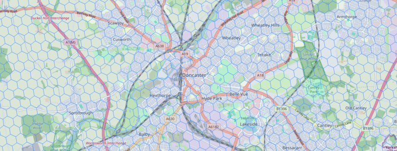
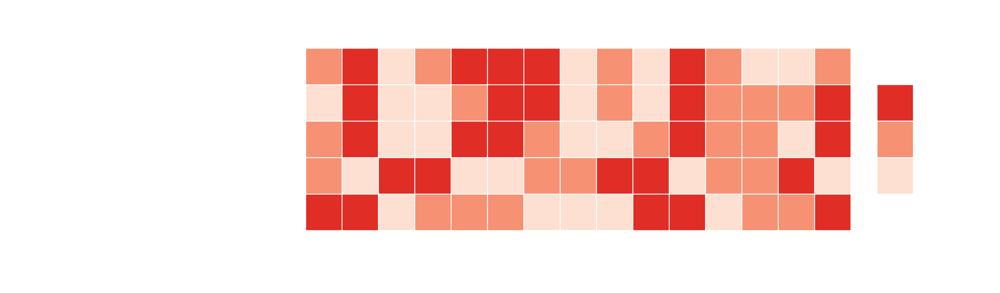
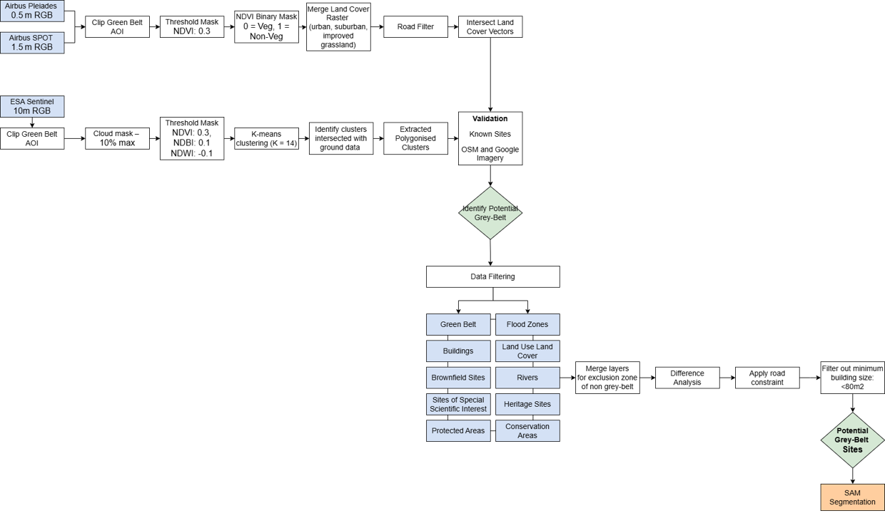
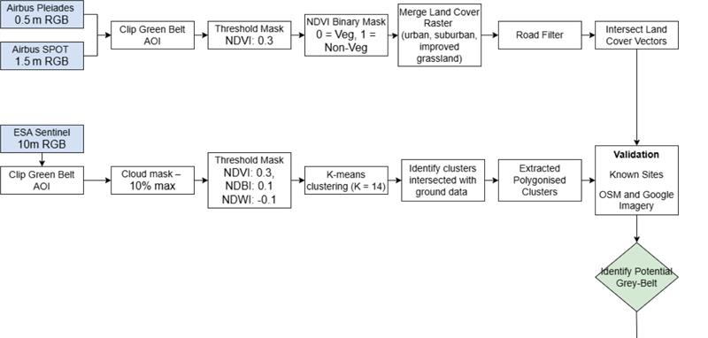
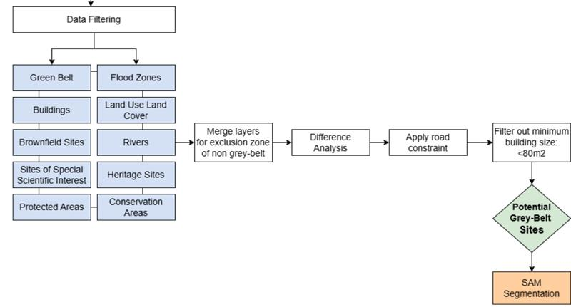
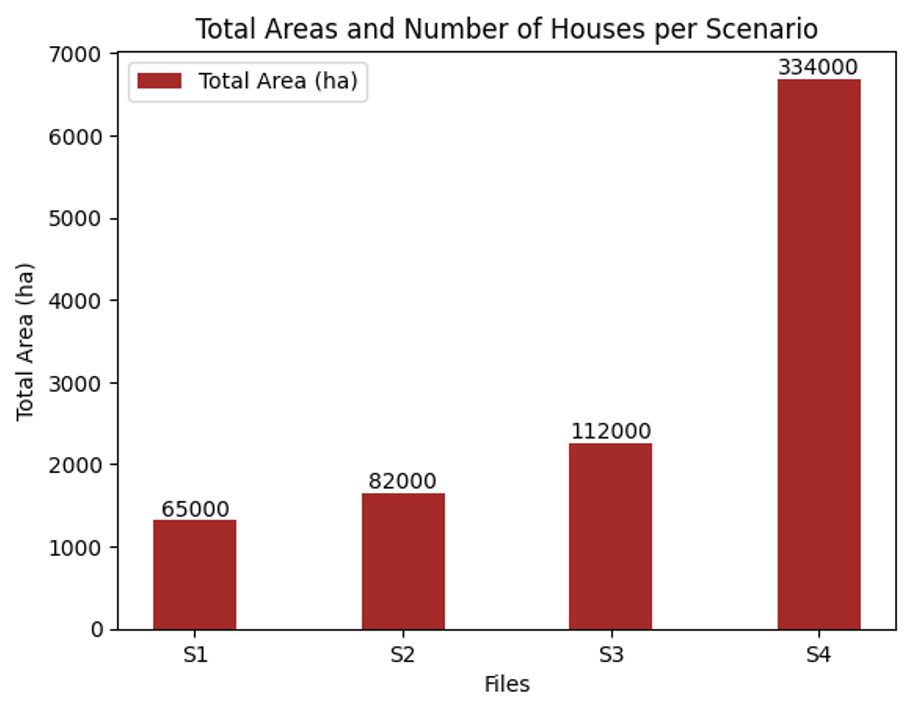
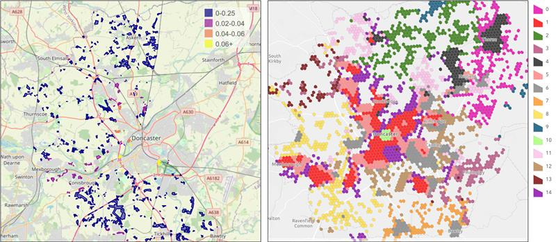

Challenge Week 2025
Identifying housing redevelopment opportunities in Doncaster and Rotherham
by Geospatial Systems CDT
Content
- Motivation
- Objectives
- Challenge 1
- Challenge 2
- Summary
Background
Background
- ~ 24.9m homes in England.
- 1.33m households on local authority housing registers, highest in 10 years.
- UK population projected to reach 72.5m by 2032
Population Change
Household Tenure
Household Tenure
The rise in privately rented homes between 2011 and 2021 is likely attributed to:
- Declining homeownership affordability
- Reduction in social housing supply
Motivation
Motivation
UK government committed to building 1.5m new homes by 2029.
Motivation
UK government committed to building 1.5m new homes by 2029.
Local council's targets:
- 1198 houses in Doncaster (128% increase)
- 1080 houses in Rotherham (98% increase)
Motivation
UK government committed to building 1.5m new homes by 2029.
Local council's targets:
- 1198 houses in Doncaster (128% increase)
- 1080 houses in Rotherham (98% increase)
Ambitions for more affordable housing for everyone.
Motivation
UK government committed to building 1.5m new homes by 2029.
Local council's targets:
- 1198 houses in Doncaster (128% increase)
- 1080 houses in Rotherham (98% increase)
Ambitions for more affordable housing for everyone.
Making targeted decisions about housing supply and infrastructure investment.
Motivation
UK government committed to building 1.5m new homes by 2029.
Local council's targets:
- 1198 houses in Doncaster (128% increase)
- 1080 houses in Rotherham (98% increase)
Ambitions for more affordable housing for everyone.
Making targeted decisions about housing supply and infrastructure investment.
Taking advantage of existing developments.
Objectives
Objectives
- Develop a comprehensive submarket classification for housing markets that can be applied across England and Wales.
Objectives
- Develop a comprehensive submarket classification for housing markets that can be applied across England and Wales.
- Identify areas of grey-belt land in England and Wales that holds potential for redevelopment.
Challenge 1
Challenge 1
Develop a comprehensive submarket classification for housing markets that can be applied across England and Wales.
Challenge 1
Develop a comprehensive submarket classification for housing markets that can be applied across England and Wales.
Objectives
Challenge 1
Develop a comprehensive submarket classification for housing markets that can be applied across England and Wales.
Objectives
- Identify datasets and remote sensing imagery to classify the housing submarket.
- Select optimal methods to analyse housing characteristics, density, and market trends.
- Develop effective ways to present submarket classification results.
Dataset Identification - Variable Selection
Dataset Identification - Variable Selection
Structural Features
- (For example: land area, number of bedrooms, house price)
Dataset Identification - Variable Selection
Structural Features
- (For example: land area, number of bedrooms, house price)
Socio-Demographic Characteristics
- (For example: household income, household size, ethnicity)
Dataset Identification - Variable Selection
Structural Features
- (For example: land area, number of bedrooms, house price)
Socio-Demographic Characteristics
- (For example: household income, household size, ethnicity)
Neighbourhood Characteristics
- (For example: crime rates, schools)
Dataset Identification - Variable Selection
Structural Features
- (For example: land area, number of bedrooms, house price)
Socio-Demographic Characteristics
- (For example: household income, household size, ethnicity)
Neighbourhood Characteristics
- (For example: crime rates, schools)
Location
- (For example: distance to parks, access to transport)
Dataset Identification – Acquisition & Preprocessing
-
Clipping
(For example: flood risk, road noise...)
-
Segmentation & Joining
(For example: census data, property sold price...)
-
Reformatting & Transformation
(For example: school performance...)
-
Feature Engineering
(For example: building footprint to garden size ratio...)
Earth Observation
H3 300m Hex Grid
Clustering Algorithm
Dimensionality Reduction
Reduce the feature dimensions while maintaining greater than 90% variance.
PCA – Feature Importance and Demographic Character
Presenting Submarkets Classification StoryMap

Interactive Submarkets Analysis
Explore our interactive StoryMap showing submarkets analysis in Doncaster and Rotherham.
Open StoryMap
Note: ArcGIS credentials may be required to view this content.
Interactive Submarkets Analysis
Explore our interactive StoryMap showing submarkets analysis in Doncaster and Rotherham.
Note: ArcGIS credentials may be required to view this content.
Challenge 1: Future Work
Data Enhancements
- Higher resolution data where possible
- Data disaggregation for finer analysis
- Additional preprocessing (e.g., house price trends)
- Extend 2015 dataset with energy data
Analysis Refinements
- Try alternative clustering methods
- Extend temporal analysis for trend identification
- Weight features by % variance explained
- Assess additional locations (Sheffield, London)
Conclusions
Conclusions
- Determine which variables are most important for creating clusters.
Conclusions
- Determine which variables are most important for creating clusters.
- Clusters demonstrate similar areas across Doncaster and Rotherham.
- Use to direct clients to areas of interest.
Conclusions
- Determine which variables are most important for creating clusters.
- Clusters demonstrate similar areas across Doncaster and Rotherham.
- Use to direct clients to areas of interest.
- Potential to assess temporal changes in variable importance, relating to different requirements across the area.
Conclusions
- Determine which variables are most important for creating clusters.
- Clusters demonstrate similar areas across Doncaster and Rotherham.
- Use to direct clients to areas of interest.
- Potential to assess temporal changes in variable importance, relating to different requirements across the area.
- The framework can be adapted to accommodate more variables.
Challenge 2
Challenge 2
Identify areas of grey-belt land in England and Wales that holds potential for redevelopment.
Challenge 2
Identify areas of grey-belt land in England and Wales that holds potential for redevelopment.
Objectives
Challenge 2
Identify areas of grey-belt land in England and Wales that holds potential for redevelopment.
Objectives
- Identify suitable satellite imagery techniques for Grey Belt recognition.
- Develop a framework for identifying grey belt areas.
- Integrate with additional data sources for deeper insights.
What is Grey Belt Land?
Definition
Land within the green belt that:
- Contains brownfield sites
- Has low ecological value
- Is previously developed or underutilised
Key Characteristics
Does not strongly contribute to:
- Prevention of urban sprawl
- Separation of neighboring towns
- Preservation of historic town settings
Grey Belt Planning Considerations
Protected Exclusions
- Flood zones
- Conservation areas
- Sites of Special Scientific Interest
- Ancient woodland & protected habitats
Development Requirements
- Appropriate transport connections
- Meeting demonstrable housing needs
- Preserving remaining Green Belt purpose
Grey Belt "Golden Rules"
Affordable Housing
Development must include provision for affordable housing options
Infrastructure
Projects must contribute to improving local infrastructure
Green Spaces
Development must enhance and improve access to green spaces
Data Sources
OS
- Topography Master Map
- Points of Interest
- Open Roads
Gov Planning
- Brownfield Land
MHCLG
- Green Belt Regions
- Local Authority Boundaries
Nat Eng
- Sites of Special Scientific Interest
- Nature Reserves
- Special Protection Areas
- Special Areas of Conservation
EA
- Flood Zones
Hydrosheds
- Water Features
Airbus
- Pleiades (0.5m resolution)
- SPOT (1.5m resolution)
ESA
- Sentinel-2 (10m resolution)
UKCEH
- Land Use/Land Cover (LULC)
Methodology
Methodology
Methodology
Grey Belt Analysis StoryMap
Interactive Grey Belt Analysis
Explore our interactive StoryMap showing potential Grey Belt development opportunities in Doncaster and Rotherham.
Note: ArcGIS credentials may be required to view this content.
Scenario Based Analysis
| Scenario/ Criteria |
S1 | S2 | S3 | S4 |
|---|---|---|---|---|
| Road Buffer | 150m | 250m | 500m | No roads buffer |
| River/Drainage Buffer |
250m | 150m | 50m | 5m |
| Building holes | No fill | Fill buildings < 200sqm |
Fill buildings < 500sqm |
Fill all buildings |
| Sites of interest | SSSI + SPA + SCA | SSSI + SPA + SCA | SSSI | SSSI |
Results
Limitations
Limitations
- Dependent on data availability and quality.
Limitations
- Dependent on data availability and quality.
- Unclear guidance from local planning policy.
Limitations
- Dependent on data availability and quality.
- Unclear guidance from local planning policy.
- Using average house size – unrealistic house shape.
Limitations
- Dependent on data availability and quality.
- Unclear guidance from local planning policy.
- Using average house size – unrealistic house shape.
Limitations
- Dependent on data availability and quality.
- Unclear guidance from local planning policy.
- Using average house size – unrealistic house shape.
- High-resolution imagery vs. computational costs.
Limitations
- Dependent on data availability and quality.
- Unclear guidance from local planning policy.
- Using average house size – unrealistic house shape.
- High-resolution imagery vs. computational costs.
- No guarantee for planning permission.
Limitations
- Dependent on data availability and quality.
- Unclear guidance from local planning policy.
- Using average house size – unrealistic house shape.
- High-resolution imagery vs. computational costs.
- No guarantee for planning permission.
- Unable to provide a definitive number of potential newbuilds.
Segmentation Analysis Refinements
Constraints
- High resolution satellite imagery is expensive
- High computational costs for training
Approach
- Process specific grey belt polygons with Segment Anything Model
- Focus on smaller image segments to optimise processing
- Refine detection by segmenting objects within land use parcels
Industrial
Agricultural
Housing
Transformation High-Resolution Imagery
Input 1
Input 2
Input 3
Input 4
Output 1
Output 2
Output 3
Output 4
Future Work
- Refine grey-belt delineation
- Further analysis – e.g. accessibility
- Test in broader contexts
- Explore alternative models
- More validation required
- Develop a user-friendly Graphical User Interface (GUI)
"So, is the grey belt a good thing? It isn't black and white, but depends to a great extent on how effectively the government manages the transition to strategic planning."
Head of Practice and Research at the RTPI
Conclusion
Free vs Paid Comparison
Click the image to view the interactive map